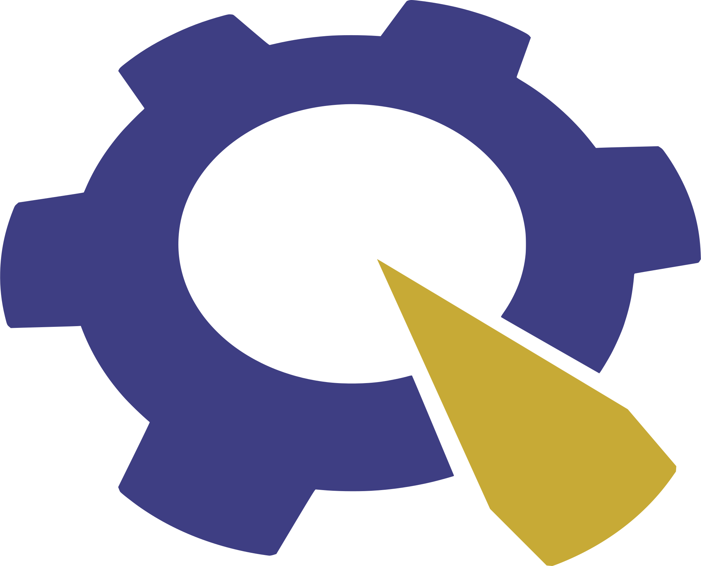

<link rel="import" href="../../bower_components/polymer/polymer.html">
<link rel="import" href="../../bower_components/app-route/app-location.html">
<link rel="import" href="../../bower_components/app-route/app-route.html">
<link rel="import" href="../components/module-element.html">
<link rel="import" href="../web-app/shared-styles.html">
<dom-module id="page-resume">
<template>
    <style include="shared-styles">
        module-element {
            font-weight: lighter;
            color: white;
            background-color: rgba(0, 0, 0, .45);
            background-blend-mode: multiply;
            background-size: cover;
            background-position: center;
            //margin-bottom: 40px;
        }
        #nasa {
            background-image: url(../../assets/images/space.jpeg);
        }
        #pioneers {
            background-image: url(../../assets/images/robotics-tournament.jpg);
        }
        .locations {
            font-size: 16px;
            margin-left: 10px;
        }
    </style>
    <module-element id="nasa">
        <div class="container">
            </img>
            <div text>
                <div primary>Intern,</div>
                <div secondary>NASA<span class="locations">Greenbelt, MD</span></div>
                <div tertiary>June 2016 - present</div>
                <p main>During the summer of 2016, I interned for the
                  <a href="http://ccmc.gsfc.nasa.gov" target="_blank">Community Coordinated Modeling Center</a> (CCMC)
                at the <a href="https://nasa.gov/goddard" target="_blank"> Goddard Space Flight Center</a> (GSFC).</p>
            </div>
        </div>
    </module-element>

    <module-element id="pioneers">
        <div class="container">
            </img>
            <div text>
                <div primary>Web Developer and Event Coordinator,</div>
                <div secondary>Pioneers in Engineering<span class="locations">Berkeley, CA</span></div>
                <div tertiary>October 2015 - present</div>
                <p main>
                    <a href="https://pioneers.berkeley.edu" target="_blank">Pioneers in Engineering</a> is a student-run, non-profit organization that hosts robotics competitions for underserved high school students.
                </p>
            </div>
        </div>
    </module-element>
    </module-element>
</template>
<script>
    Polymer({
        is: "page-resume"
    });
</script>
</dom-module>
